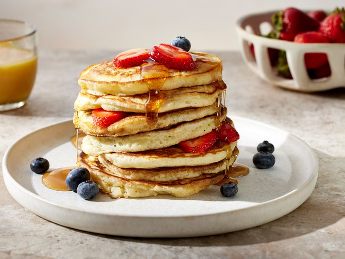

🧾 Ingredients
- 1½ cups all-purpose flour
- 3½ tsp baking powder
- 1 tbsp sugar
- ¼ tsp salt
- 1¼ cups milk
- 1 egg
- 3 tbsp melted butter
- 1 tsp vanilla extract
👨🍳 Instructions
- In a bowl, mix flour, baking powder, sugar, and salt.
- In another bowl, whisk milk, egg, butter, and vanilla.
- Combine wet and dry ingredients. Stir gently (don't overmix).
- Heat a pan over medium heat. Lightly grease it.
- Pour ¼ cup batter onto pan. Cook until bubbles form, then flip.
- Repeat with remaining batter. Serve warm with honey, fruits, or syrup!